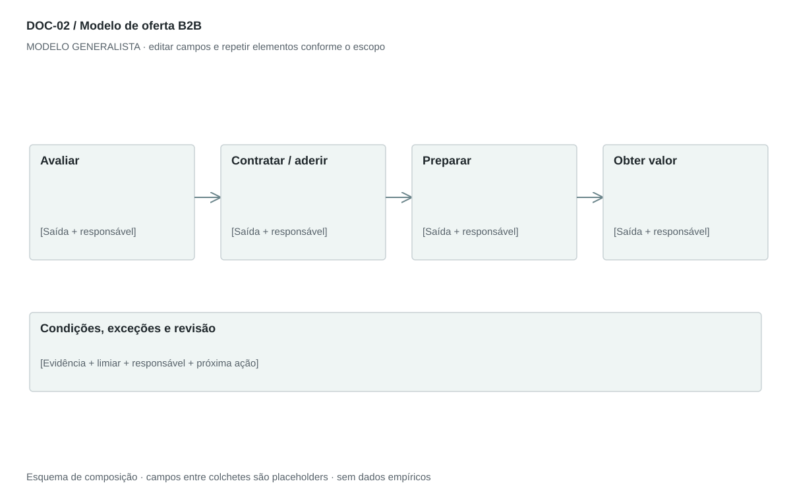

DOC-02 / Biblioteca documental generalista
Modelo de oferta B2B
Explicar a contratação, implantação, uso, cobrança e suporte para uma organização compradora.
Modelo de investigação. Não representa uma análise concluída. Campos vazios devem permanecer identificados; não inventar dados para completar figuras.
Estrutura editorial
1–2 páginas retrato. Ordem: problema e resultado → como contratar → condições → implantação e uso → benefícios demonstráveis → próximo passo.
Visual previsto

Avaliar → contratar → implantar → operar → renovar/encerrar. Abaixo de cada etapa, indicar responsável e documento de saída.
Imagens: Diagrama de fluxo; captura real ou wireframe do serviço apenas se ajudar a explicar a entrega. Não inserir painel ou equipamento que o novo negócio não tenha.
Dicionário de dados
| Campo | Tipo | Dado necessário |
|---|
| segmento | referencia | Grupo de organizações que enfrenta o problema |
| papel_compra | texto | Usuário, comprador, decisor ou aprovador |
| problema | texto | Custo, atraso ou oportunidade da organização |
| unidade_cobranca | texto | Por entrega, assento, licença, uso ou outro denominador |
| preco | decimal | null enquanto não houver hipótese ou preço aprovado |
| moeda | texto | Código da moeda, sem assumir real ou euro |
| recorrencia | texto | Única, mensal, anual ou variável |
| requisito_cliente | texto | Condição necessária para a entrega |
| metrica_valor | texto | Como verificar o benefício e em qual período |
| canal_suporte | texto | Canal e prazo acordado |
Todos os registros precisam de classificação, fonte, localização, datas, confiança e limitação. Números também precisam de unidade, moeda quando aplicável e período.
Modelo preenchível
Os quadros amarelos podem ser editados nesta página para impressão. Edições não são gravadas automaticamente: use o Markdown/JSON para manter uma versão ou imprima em PDF após editar.
[Negócio] · [Versão] · [Data-base] · [Autor] · [Audiência] · [Território]
Pergunta decisória: [A preencher]
Escopo: [A preencher]
1. Cliente e situação de compra
Separe usuário, comprador, decisor e aprovador; detalhe o problema e a alternativa atual.
[Análise + evidência + implicação + lacuna]
2. Como funciona
Descreva avaliação, contratação, implantação, uso recorrente e encerramento.
[Análise + evidência + implicação + lacuna]
3. Condições comerciais
Informe unidade cobrada, preço, moeda, recorrência, implantação, variáveis, prazo e itens não incluídos.
[Análise + evidência + implicação + lacuna]
4. Requisitos e responsabilidades
Declare recursos que o cliente fornece, dependências e o que o prestador entrega.
[Análise + evidência + implicação + lacuna]
5. Valor e prova
Associe cada benefício a um indicador, comparação e evidência; mantenha benefícios não testados como hipóteses.
[Análise + evidência + implicação + lacuna]
6. Suporte e próximo passo
Defina canais, horários, prazos negociados e a ação para avaliar ou contratar.
[Análise + evidência + implicação + lacuna]
Decisão e próximo passo
[Decisão e justificativa]
[Alternativa considerada]
[Condição de reversão]
[Ação, responsável, prazo e critério]
Fontes e limites
[Fonte + localização + datas + o que sustenta + limitações]
Critérios de revisão
- Taxas mostram base de incidência e periodicidade.
- Requisitos do cliente são explícitos.
- Garantias e comparações exigem evidência.
Estudo do arquivo original
DOC-02-fonte.pdf — Uma página retrato. Título central, seção How It Works, duas etapas numeradas, condições comerciais em bullets, funcionalidades do painel e vantagens em negrito. É uma ficha de oferta e funcionamento, não um plano de negócios completo.
Observação do original e adaptação recomendada são camadas distintas. Nomes, preços, localidades, contatos e conclusões do caso-fonte não devem preencher a nova análise.